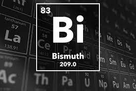

BISMUTH

PROPERTIES
1) its atomic number is 83.
2) Its sulfide oxide are some of its commercial ores.
3)It is a brittle white metal with a pinkish tinge.
4) It resembles antimony in its mode of occurrence but is less common.
5)The content of bismuth in the earth’s crust has been estimated(229)to be 0.00002 weight %, about the same abundance as silver.
6) Its cosmic abundance is estimated to be at about one atom per 107 atoms of silicon.
7) The metallic properties of bismuth are more pronounced than that of either antimony or arsenic.
8)Bismuth, along with As and Sb, is used as a gold pathfinder element (Boyle 1974) as it often indicates the presence of granitic intrusive centers and discordant structures that focus on lode gold mineralizing systems.
9)Due to its higher growth rate around the outer sides than on the inner sides bismuth crystals form a spiral, stair-stepped structure.
10) Bismuth is a brittle metal, so it is usually mixed with other metals to make it useful.
11)It is used in extinguishers, electric fuses, and fire detectors.
12)Certain bismuth compounds are also manufactured and used as pharmaceuticals.
13)Industry makes use of bismuth compounds as catalysts in manufacturing acrylonitrile, the starting material for synthetic fibers and rubbers.
14)It is occasionally used in the production of shot and shotguns.
Reaction of BISMUTH
Upon heating, bismuth reacts with oxygen in air to form the trioxide bismuth(III) oxide, Bi2O3. The flame is bluish white.
4Bi(s) + 3O2(g) ? 2Bi2O3(s)
At red heat, bismuth reacts with water to form the trioxide bismuth(III) oxide, Bi2O3.
2Bi(s) + 3H2O(g) ? Bi2O3(s) + 3H2(g)
Bismuth reacts with fluorine, F2, to form the pentafluoride bismuth(V) fluoride.
2Bi(s) + 5F2(g) ?2 BiF5(s) [white]
Bismuth reacts under controlled conditions with the halogens fluorine, F2, chlorine, Cl2, bromine, Br2, and iodine, I2, to form the respective trihalides bismuth(III) fluoride, BiF3, bismuth(III) chloride, BiCl3, bismuth(III) bromide, BiBr3, and bismuth(III) iodide, BiI3.
2Bi(s) + 3F2(g) ?2BiF3(s) []
2Bi(s) + 3Cl2(g) ? 2BiCl3(s) []
2Bi(s) + 3Br2(g) ?2BiBr3(s) []
2Bi(s) + 3I2(g) ? 2BiI3(s) []
Bismuth dissolves in concentrated sulphuric acid, H2SO4, or nitric acid, HNO3, to form solutions containing Bi(III). The sulphuric acid reaction produces sulphur(IV) dioxide gas. With hydrochloric acid in the presence of oxygen, bismuth(III) chloride is produced.
4Bi(s) + 3O2(g) + 12HCl(aq) ? 4BiCl3(aq) + 6H2O(l)